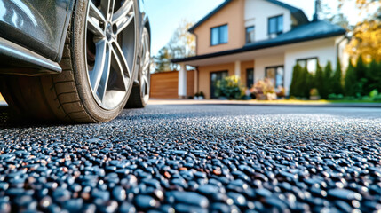

Precision Driveway Care
24/7Quick response for quote requests
4-StepControlled process from prep to finish
Clean+Sharper front-of-home presentation
Built for stains, traffic marks, algae, and dull-looking surfaces
The old driveway sections are replaced with a cleaner, more structured layout that explains the service better and stays aligned properly across desktop, tablet, and mobile.
- Concrete and exposed aggregate washing
- Paver-safe cleaning around joints
- Tyre mark and grime reduction
- Detailed rinse around borders and entries

What We Handle
Four focused service blocks with balanced spacing and clean alignment
This new card grid is designed to look professional while keeping spacing, card height, and typography under control on every screen size.
Deep Surface Washing
Everyday grime and weather buildup are lifted with a cleaner, more even finish.
Stain-Focused Treatment
Extra attention for oil marks, traffic lines, and dark spots that age the whole frontage.
Algae and Moss Removal
Slippery shaded areas are cleaned back for a brighter and safer arrival path.
Edge and Entry Finishing
Garage fronts, borders, and transition zones are detailed so the result feels complete.
Results That Show
Cleaner contrast, brighter tone, and a stronger first impression
A strong driveway clean is not just about blasting dirt away. It is about improving how the whole front of the property looks and feels when someone arrives.
- More consistent wash pattern without patchy-looking areas
- Cleaner presentation before guests, viewings, or routine upkeep
- Sharper visual link between the driveway, garage, and front entrance
Dull tone and uneven buildup
Traffic lines, algae shadows, and darker patches flatten the entrance and reduce curb appeal.
Lowfront-of-home impact
Brighter finish with cleaner details
Driveway tone reads more evenly and the entrance feels much more intentionally maintained.
Highvisual impact and polish
Our Process
Simple process section with motion, structure, and reliable readability
Animations stay subtle and professional, while the layout remains stable across breakpoints without awkward spacing or text jumps.
01
Quick Review
We check surface type, buildup, access, and the finish level you want to see.
02
Surface-Safe Prep
Cleaning strength and treatment are matched to the material before washing begins.
03
Precision Clean
We work evenly across the driveway and detail the border zones for a cleaner result.
04
Final Finish Check
The driveway is reviewed at the end so the presentation looks sharp and complete.
Service Summary
Professional closing section with cleaner hierarchy and stronger mobile behavior
The page now closes with a polished summary area, tighter hierarchy, and cleaner spacing that stays balanced on smaller devices.
- No oversized font jumps or awkward responsive alignment
- Professional card rhythm with subtle animation and soft hover lift
- Cleaner service summary with practical contact guidance
Fast callback support for booking and service questions.
Clear quote path with practical guidance before scheduling.